Laboratorio de Sistemas Operativos · 2026A
Práctica 3: Creación de Procesos
Escuela Politécnica Nacional — Facultad de Ingeniería en Sistemas
Objetivos
- Familiarizar al estudiante con el uso de las funciones fork(), exec() y system().
- Comprender el comportamiento de procesos padre e hijo en Linux.
- Identificar procesos zombie y huérfanos, y sus implicaciones en el sistema.
- Realizar actividades prácticas de creación de procesos en lenguaje C.
Marco Teórico
Todo programa en ejecución es un proceso. El sistema operativo gestiona todos los procesos y los identifica con un número único llamado PID (Process ID). Cada proceso (excepto el primero, init / systemd) tiene un padre, cuyo identificador se obtiene con getppid().
fork()
Crea un clon exacto del proceso actual. El valor de retorno diferencia padre de hijo:
| Valor retornado | Significado |
|---|---|
-1 | Error al crear el proceso |
0 | Código ejecutado por el proceso hijo |
> 0 | Código ejecutado por el proceso padre (valor = PID del hijo) |
exec()
Sustituye la imagen de memoria del proceso actual por un nuevo programa. A diferencia de fork(), no crea un nuevo proceso — reemplaza al actual. Las variantes más usadas son execl(), execv() y execvp().
system()
Permite ejecutar un comando del shell desde un programa C. Internamente crea un proceso hijo que ejecuta /bin/sh -c comando. Es más sencilla que exec() pero menos eficiente y segura para producción.
Equipo y Distribución de Tareas
| Integrante | Responsabilidad | Etiqueta |
|---|---|---|
| Sebastian Rios (Líder) | Integración GitHub, documentación general, informe HTML | Coordinación |
| Emily Tituaña | Ejercicios 3.1.1 y 3.1.2 (Figuras 1 y 2) | Fork |
| Gabriel Quilachamin | Ejercicios 3.1.3 y 3.1.4 (Figuras 3 y 4) | Fork |
| Daniela Caiza | Ejercicio 3.2.1 — uso de exec() (Figura 6) | Exec |
| Stefanie Ortega | Ejercicio 3.3.1 — uso de system() | System |
Uso de fork()
Fork
3.1.1 — Identificar valores PID y PPID
Fork · Emily TituañaSe ejecuta el código de la Figura 1 para observar cómo fork() crea un proceso hijo y cómo cada proceso reporta su propio PID y el PID de su padre.
#include <stdio.h>
#include <unistd.h>
int main()
{
printf("Ejemplo de fork.\n");
printf("Inicio del proceso padre. PID=%d\n", getpid());
if (fork() == 0)
{
/* Proceso hijo */
printf("Inicio proceso hijo. PID=%d, PPID=%d\n", getpid(), getppid());
sleep(1);
}
else
{
/* Proceso padre */
printf("Continuacion del padre. PID=%d\n", getpid());
sleep(1);
}
printf("Fin del proceso %d\n", getpid());
return 0;
}Salida del programa
Ejemplo de fork.
Inicio del proceso padre. PID=1327
Continuacion del padre. PID=1327
Inicio proceso hijo. PID=1328, PPID=1327
Fin del proceso 1327
Fin del proceso 1328Análisis de PIDs
| Proceso | PID | PPID | Descripción |
|---|---|---|---|
| Padre | 1327 | (shell) | Proceso que ejecuta el programa y llama a fork() |
| Hijo | 1328 | 1327 | Clon creado por fork(); su padre es el proceso 1327 |
fork(), el SO crea el proceso hijo con PID 1328, cuyo PPID apunta al padre (1327). Ambos terminan de forma independiente.📸 Capturas de compilación y ejecución
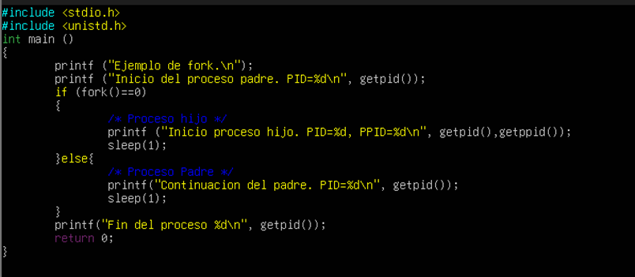
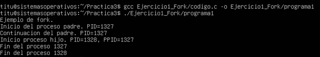
3.1.2 — Padre incrementa variable; hijo registra en archivo
Fork · Emily TituañaEl proceso padre incrementa 10 veces una variable en pasos de 10, mientras el proceso hijo escribe cada valor en registro.txt.
fork(), padre e hijo tienen copias independientes de la variable. El incremento del padre no se refleja directamente en el hijo; el hijo lleva su propio contador.#include <stdio.h>
#include <stdlib.h>
#include <unistd.h>
#include <sys/wait.h>
int main() {
int pid = fork();
int variable = 0;
if (pid == 0) {
/* Proceso hijo: escribe en archivo */
FILE *f = fopen("registro.txt", "w");
if (f == NULL) exit(1);
for (int i = 1; i <= 10; i++) {
variable += 10;
fprintf(f, "iteracion %d: %d\n", i, variable);
fflush(f);
printf("Hijo registra: %d\n", variable);
sleep(1);
}
fclose(f);
exit(0);
} else {
/* Proceso padre: incrementa e imprime */
for (int i = 1; i <= 10; i++) {
variable += 10;
printf("Padre incrementa: %d\n", variable);
sleep(1);
}
wait(NULL);
}
return 0;
}registro.txt contiene las 10 iteraciones (10, 20, … 100). El padre espera al hijo gracias a wait(NULL), evitando un proceso zombie.📸 Capturas de compilación y ejecución

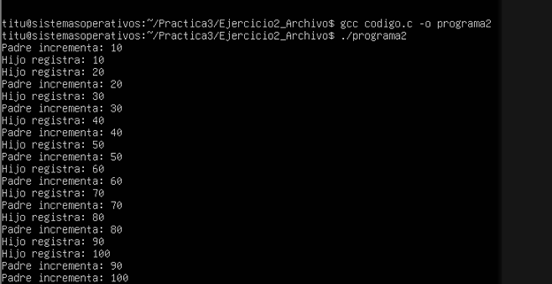
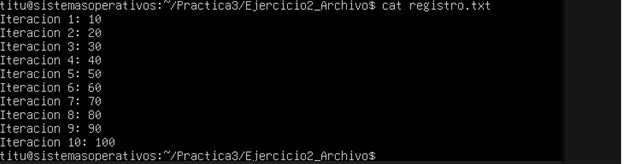
3.1.3 — Proceso hijo sin espera (Proceso Huérfano)
Fork · Gabriel QuilachaminCuando el padre termina antes que el hijo, el hijo queda huérfano. El SO lo re-adopta automáticamente bajo init / systemd (PID 1).
Preguntas del ejercicio
| Pregunta | Respuesta |
|---|---|
| a) ¿Cuál es el PID del proceso padre e hijo creado? | Padre: 1065 · Hijo: 1066 (varían en cada ejecución) |
| b) ¿A qué proceso corresponde ese ID? | PID 1065 → proceso padre (original). PID 1066 → proceso hijo creado por fork() |
| c) ¿Cómo se denomina este tipo de proceso hijo? | Proceso huérfano (orphan process). El hijo alcanzó a capturar el PPID real justo antes de que el SO lo reasignara a init |
d) Código modificado para evitar el proceso huérfano
Se agrega wait(NULL) en el bloque del padre y se retira wait(0) del hijo:
#include <unistd.h>
#include <stdlib.h>
#include <stdio.h>
#include <sys/wait.h>
int pid;
int main() {
pid = fork();
switch (pid) {
case -1:
printf("\nNo he podido crear el proceso hijo");
break;
case 0:
printf("\nSoy el hijo, mi PID es %d y mi PPID es %d", getpid(), getppid());
/* Se retira wait(0) del hijo */
break;
default:
printf("\nSoy el padre, mi PID es %d y el PID de mi hijo es %d", getpid(), pid);
wait(NULL); /* ← esta línea evita el huérfano */
break;
}
printf("\nFinal de ejecución de %d \n", getpid());
exit(0);
}wait(NULL) en el padre, cuando el hijo imprime su PPID, este sigue siendo el PID del padre real (no 1), confirmando que el proceso ya no queda huérfano.📸 Capturas de compilación y ejecución
Captura 1 — Código original: compilación y ejecución (se observa cómo el hijo queda huérfano)


Captura 2 — Código modificado: compilación y ejecución (el hijo ya no queda huérfano)


3.1.4 — Un padre y tres procesos hijo con tareas distintas
Fork · Gabriel QuilachaminModificación de la Figura 4: en lugar de que los tres hijos hagan la misma tarea (contar del 1 al 10), cada uno realiza una operación diferente según su número de proceso.
#include <stdio.h>
#include <stdlib.h>
#include <unistd.h>
#include <sys/wait.h>
#define NUM_PROC 3
void hijoHasAlgo(int numero);
int main() {
int i, pid;
for (i = 1; i <= NUM_PROC; i++) {
pid = fork();
switch(pid) {
case -1: fprintf(stderr, "Error al crear el proceso\n"); break;
case 0: hijoHasAlgo(i); exit(0);
default:
wait(NULL);
printf("Mi hijo %d ha terminado.\n", i);
break;
}
}
return 0;
}
void hijoHasAlgo(int numero) {
printf("\nEjecutando el hijo %d (PID: %d)\n", numero, getpid());
if (numero == 1) {
printf("Hijo 1 - Conteo ascendente:\n");
for (int i=1; i<=10; i++) printf("%d\t", i);
} else if (numero == 2) {
printf("Hijo 2 - Cuadrados:\n");
for (int i=1; i<=10; i++) printf("%d\t", i*i);
} else if (numero == 3) {
printf("Hijo 3 - Conteo descendente:\n");
for (int i=10; i>=1; i--) printf("%d\t", i);
}
printf("\n");
}Tareas por hijo
| Hijo | Tarea | Descripción |
|---|---|---|
| Hijo 1 | Conteo ascendente (1→10) | Imprime los números del 1 al 10 |
| Hijo 2 | Cuadrados (1²→10²) | Imprime los cuadrados del 1 al 10 |
| Hijo 3 | Conteo descendente (10→1) | Imprime los números del 10 al 1 |
Ejecutando el hijo 1 (PID: XXXX)
Hijo 1 - Conteo ascendente:
1 2 3 4 5 6 7 8 9 10
Mi hijo 1 ha terminado.
Ejecutando el hijo 2 (PID: XXXX)
Hijo 2 - Cuadrados:
1 4 9 16 25 36 49 64 81 100
Mi hijo 2 ha terminado.
Ejecutando el hijo 3 (PID: XXXX)
Hijo 3 - Conteo descendente:
10 9 8 7 6 5 4 3 2 1
Mi hijo 3 ha terminado.📸 Capturas de compilación y ejecución


Uso de exec()
Exec
3.2.1 — Sustitución de la imagen de memoria con execl()
Exec · Daniela CaizaEn este ejercicio se implementó la llamada al sistema execl() de manera directa para sustituir el espacio de direcciones de memoria del proceso hijo con el ejecutable del comando de listado detallado "ls -l".
#include <stdio.h>
#include <stdlib.h>
#include <unistd.h>
#include <sys/wait.h>
int main() {
char *program = "/bin/ls";
printf("Padre (PID %d): Iniciando proceso hijo...\n", getpid());
int pid = fork();
if (pid == -1) {
perror("Error al crear el proceso");
exit(1);
} else if (pid == 0) {
printf("Hijo (PID %d): Ejecutando comando ls...\n", getpid());
execl(program, "ls", "-l", NULL);
perror("Error al ejecutar exec");
exit(0);
} else {
wait(0);
printf("Padre: El proceso hijo ha finalizado exitosamente.\n");
}
return 0;
}A diferencia de fork(), que crea un clon, execl() carga y ejecuta un nuevo archivo binario (especificado mediante su ruta absoluta /bin/ls), reemplazando por completo la imagen de memoria del proceso hijo.
🛠️ Funciones del Sistema Utilizadas
| Función | Descripción Técnica |
|---|---|
fork() |
Duplica el proceso llamador, creando un nuevo proceso hijo concurrente. |
execl() |
Sustituye el proceso actual. Requiere una lista de argumentos terminada imperativamente con un puntero NULL. |
wait(0) |
Suspende al proceso padre hasta que el proceso hijo finalice su tarea y cambie de estado. |
getpid() |
Devuelve el identificador único de proceso (PID) asignado por el kernel. |
Se utilizó el compilador gcc para transformar el fuente ejercicio_exec.c en el ejecutable ejercicio_exec mediante la opción -o.
📸 Evidencia de Ejecución
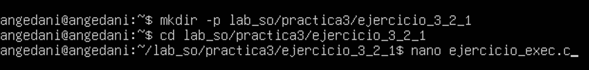
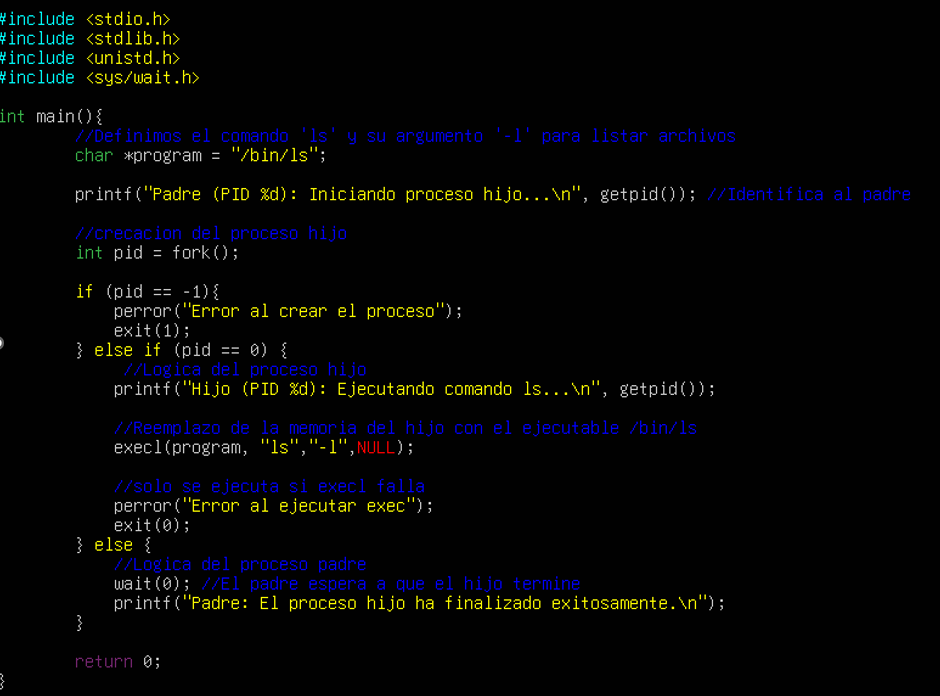
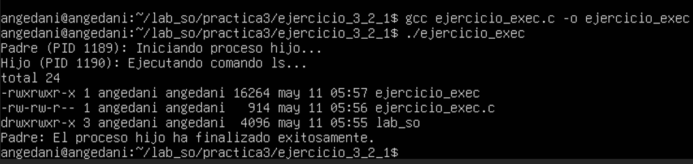
📊 Análisis de Resultados
Al ejecutar el programa se obtuvo una salida estructurada en la terminal de la máquina virtual que evidencia el control de los procesos:
- Padre (PID 1189): Inicia su ciclo, obtiene su PID del núcleo y efectúa la bifurcación.
- Hijo (PID 1190): El sistema operativo crea exitosamente el proceso clonado asignándole el identificador correlativo inmediato.
- Mutación de Memoria: Se despliegan los detalles de permisos y tamaños (total 24...), lo que demuestra la ejecución exitosa de
/bin/lstras la mutación completada porexecl(). - Finalización: El proceso padre, tras haber estado en estado de espera controlado (wait), reanuda su ejecución al recibir la señal de terminación del hijo.
Uso de system()
System3.3.1 — Proceso hijo que lista los procesos del sistema
System · Stefanie Ortega¿Qué es system()?
system() es una función de la biblioteca estándar de C (<stdlib.h>) que permite ejecutar un comando de shell directamente desde un programa en C/C++. Sirve para lanzar comandos del sistema, scripts u otros ejecutables sin salir del programa actual.
| Característica | Descripción |
|---|---|
| Abstracción | Función de alto nivel que abstrae el uso de fork, execl y wait manualmente |
| Eficiencia de desarrollo | Reduce líneas de código, aunque se pierde algo de control sobre el proceso |
| Dependencia del shell | Siempre depende de que /bin/sh esté disponible |
¿Cómo funciona internamente?
system() usa fork() para crear un proceso hijo que ejecuta el comando usando execl():
execl("/bin/sh", "sh", "-c", command, (char *) 0);system() no debe usarse con cadenas provenientes del usuario (riesgo de inyección de comandos). Para producción, se prefiere execvp() con argumentos controlados.Código — codigo6.c
#include <stdio.h>
#include <stdlib.h>
#include <unistd.h>
#include <sys/wait.h>
#include <sys/types.h>
int main() {
pid_t pid_padre = getpid();
printf("--- Iniciando ejecucion del sistema de procesos ---\n");
printf("[PRINCIPAL] PID del proceso original: %d\n\n", pid_padre);
pid_t pid = fork();
if (pid < 0) {
perror("Error al crear el proceso (fork)");
exit(EXIT_FAILURE);
}
if (pid == 0) {
/* ── Proceso HIJO ── */
printf("[HIJO] PID: %d\n", getpid());
printf("[HIJO] PPID: %d\n", getppid());
printf("[HIJO] Mostrando procesos activos...\n");
/* ps -f --forest: jerarquía de procesos con detalles técnicos */
system("ps -f --forest");
/* sprintf construye el comando dinámico con el PID del padre */
char arreglo[100];
sprintf(arreglo, "pstree -p -A %d", getppid());
printf("[HIJO] Generando arbol con pstree:\n");
system(arreglo);
exit(0);
} else {
/* ── Proceso PADRE ── */
printf("[PADRE] PID: %d\n", getpid());
printf("[PADRE] Hijo creado con PID: %d\n", pid);
printf("[PADRE] Esperando al hijo...\n\n");
wait(NULL); /* prevención de proceso zombie */
printf("\n[PADRE] El hijo termino. Finalizando.\n");
}
return 0;
}Herramientas de monitoreo
| Herramienta | Uso | Ventaja |
|---|---|---|
ps -f --forest | Lista procesos con jerarquía en ramas | Detalles técnicos: UID, PID, PPID, CPU, hora |
pstree -p -A | Árbol visual con PIDs en ASCII | Superior para comprensión visual de la jerarquía |
system() solo acepta un único argumento const char *. Por eso se usa sprintf para construir el comando con el PID de forma dinámica, permitiendo que el programa monitoree su propio árbol sin importar qué PID asigne el sistema en cada ejecución.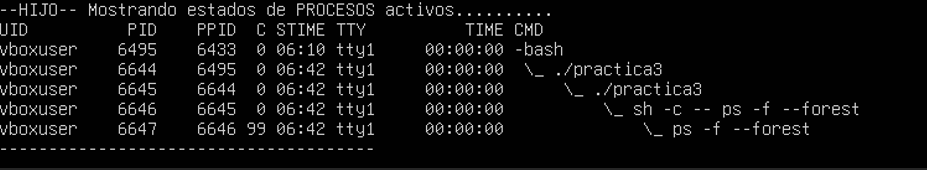
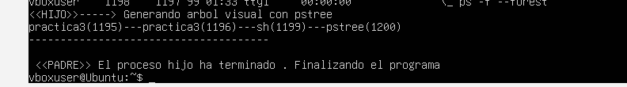
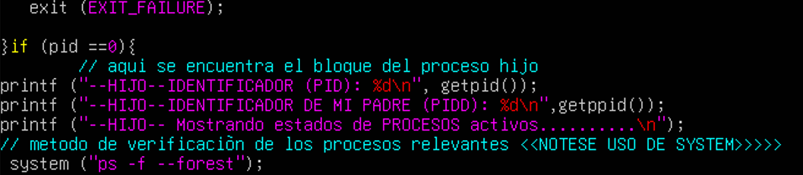
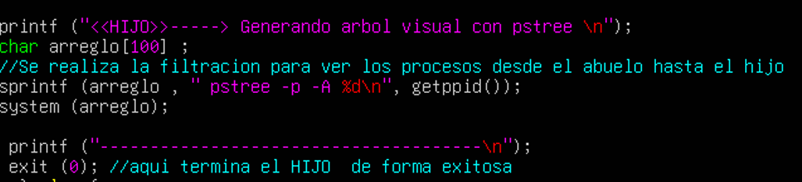
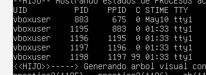
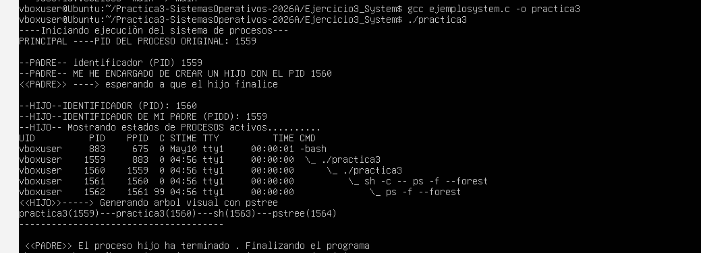
Referencias
[1] DataFlair Team, "Process in Linux - Linux Process Management Tutorial," DataFlair. Disponible en: https://data-flair.training/blogs/process-in-linux/ [Accedido: 10-may-2026].
[2] "system(3) — Linux manual page," man7.org, marzo de 2024. Disponible en: https://man7.org/linux/man-pages/man3/system.3.html